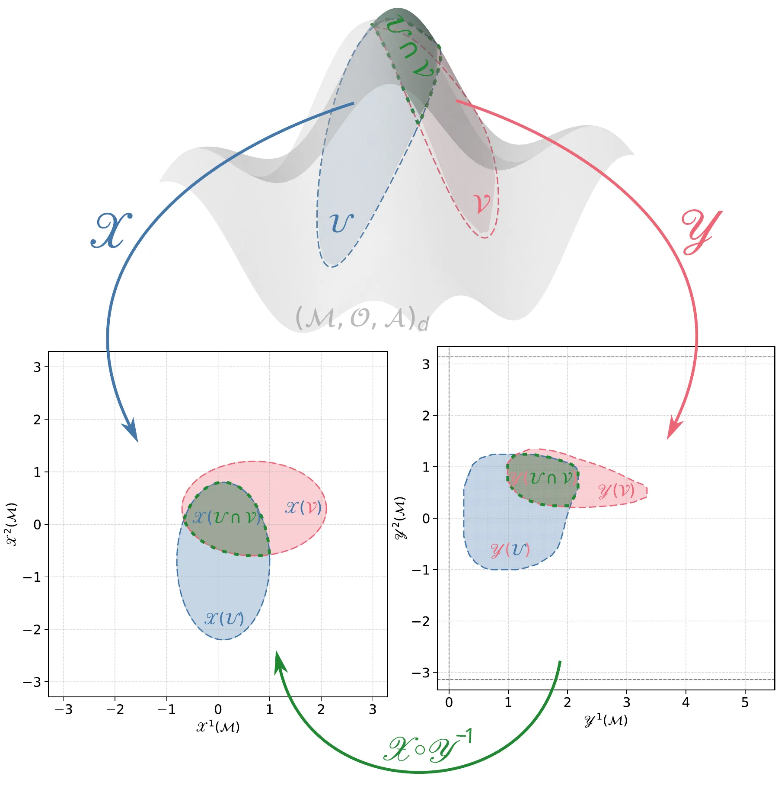

Chapter 3 • Topological Manifolds
3.2 Charts and Topological Manifolds
Given a topological space, \(\left(\mathcal{M}, \mathcal{O}_{\mathcal{M}}\right)\), and an open set \(\mathcal{U} \in \mathcal{O}_{\mathcal{M}}\), let’s suppose that we can define the following map: \begin{align*} \mathscr{X} \colon \mathcal{U} &\longrightarrow \mathscr{X}(\mathcal{U}) \subseteq \mathbb{R}^d\\ p &\mapsto \mathscr{X}(p) \coloneqq \left(\mathscr{X}^{1}(p), \ldots, \mathscr{X}^{d}(p)\right) \in \mathbb{R}^d, \end{align*} where the different component functions are given by: \begin{align*} \mathscr{X}^{i} \colon \mathcal{U} &\longrightarrow \mathscr{X}^{i}(\mathcal{U}) \subseteq \mathbb{R}\\ p &\mapsto \mathscr{X}^{i}(p)\in \mathbb{R}. \end{align*} Now let’s endow the target space with the inherited topology from the ambient standard topology in \(\mathbb{R}^d\), i.e. \(\left. \mathcal{O}_{\mathscr{X}(\mathcal{U})} \right|_{\mathbb{R}^d}\). From this we can define the topological space \(\left( \mathscr{X}(\mathcal{U}), \left. \mathcal{O}_{\mathscr{X}(\mathcal{U})} \right|_{\mathbb{R}^d} \right)\) in the target of our map.
We say that \(\mathscr{X}\) is a chart map of the chart domain \(\mathcal{U}\) if its image is open, \(\mathscr{X}(\mathcal{U}) \in \mathcal{O}_{\mathbb{R}^d}\)1, and it is a homeomorphism w.r.t. \(\left( \mathcal{U}, \left. \mathcal{O}_{\mathcal{U}} \right|_{\mathcal{M}} \right)\) and \(\left( \mathscr{X}(\mathcal{U}), \left. \mathcal{O}_{\mathscr{X}(\mathcal{U})} \right|_{\mathbb{R}^d} \right)\). If so, the component functions of \(\mathscr{X}^i\) are then called coordinate maps, and the fact that \(\mathscr{X}\) is a homeomorphism guarantees the existence of a continuous inverse chart map: \begin{align*} \mathscr{X}^{-1} \colon \mathscr{X}(\mathcal{U}) \subseteq \mathbb{R}^d &\longrightarrow \mathcal{U}\\ \left(\alpha_1, \ldots, \alpha_d\right) &\mapsto \mathscr{X}^{-1}\left(\alpha_1, \ldots, \alpha_d\right) = p \in \mathcal{U}, \quad \alpha_i \in \mathbb{R}. \end{align*} Charts, defined as the doublet \(\left(\mathcal{U}, \mathscr{X}\right)\), provide a way to describe some local structure of \(\mathcal{M}\) in terms of standard Euclidean space.
Given two intersecting charts, \(\left(\mathcal{U}, \mathscr{X}\right),\) \(\left(\mathcal{V}, \mathscr{Y}\right): \mathcal{U} \cap \mathcal{V} \neq \emptyset\), the chart transition maps between the two charts are defined as: \begin{align*} \textrm{\runic ᛖ}_{\mathcal{V}\mathcal{U}} \colon \mathscr{Y}\left(\mathcal{U}\cap \mathcal{V}\right) \subseteq \mathbb{R}^d &\rightarrow \mathscr{X}\left(\mathcal{U}\cap \mathcal{V}\right) \subseteq \mathbb{R}^d \\ \left( \beta_1, ..., \beta_d \right) &\mapsto \textrm{\runic ᛖ}_{\mathcal{V}\mathcal{U}}\left( \beta_1, ..., \beta_d \right) \coloneqq \left(\mathscr{X} \circ \mathscr{Y}^{-1} \right) \left( \beta_1, ..., \beta_d \right), \quad \beta_i \in \mathbb{R} \end{align*} \begin{align*} \textrm{\runic ᛖ}_{\mathcal{U}\mathcal{V}} \colon \mathscr{X}\left(\mathcal{U}\cap \mathcal{V}\right) \subseteq \mathbb{R}^d &\rightarrow \mathscr{Y}\left(\mathcal{U}\cap \mathcal{V}\right) \subseteq \mathbb{R}^d \\ \left( \alpha_1, ..., \alpha_d \right) &\mapsto \textrm{\runic ᛖ}_{\mathcal{U}\mathcal{V}}\left( \alpha_1, ..., \alpha_d \right) \coloneqq \left(\mathscr{Y} \circ \mathscr{X}^{-1} \right) \left( \alpha_1, ..., \alpha_d \right), \quad \alpha_i \in \mathbb{R} \end{align*} Figure 3.1 illustrates the role of charts and chart transition maps.

Figure 3.1: Illustration showing how charts map open sets from a topological manifold to open sets in \(\mathbb{R}^d\), and how chart transition maps operate between overlapping charts. The manifold is represented by the surface at the top, with two overlapping open sets labeled \(\mathcal{U}\) (in red) and \(\mathcal{V}\) (in blue), and their intersection \(\mathcal{U} \cap \mathcal{V}\) shaded in purple. The point \(p\) lies within the intersection \(\mathcal{U} \cap \mathcal{V}\). The chart map \(\mathscr{X}\) maps \(\mathcal{U}\) to an open set \(\mathscr{X}\left( \mathcal{U} \right) \subseteq \mathbb{R}^d\), and the chart map \(\mathscr{Y}\) maps \(\mathcal{V}\) to \(\mathscr{Y}\left( \mathcal{V} \right) \subseteq \mathbb{R}^d\). The images of the intersection, \(\mathscr{X}\left( \mathcal{U} \cap \mathcal{V} \right)\) and \(\mathscr{Y}\left( \mathcal{U} \cap \mathcal{V} \right)\), are shown as overlapping regions in \(\mathbb{R}^d\). The transition map \(\textrm{\runic ᛖ}_{\mathcal{U}\mathcal{V}} = \mathscr{Y} \circ \mathscr{X}^{-1}\) allows passing from the chart \(\left(\mathcal{V}, \mathscr{Y}\right)\) to the chart \(\left(\mathcal{U}, \mathscr{X}\right)\) within the overlap. This diagram encapsulates the essence of local coordinate representations and the role of chart transition functions. Given some arbitrary index set \(A\), the set \(\mathcal{A} = \left\{\left(\mathcal{U}_{\alpha}, \mathscr{X}_{\alpha}\right)_{\alpha \in A} \right\}\) is called an atlas of the topological space \(\left(\mathcal{M}, \mathcal{O}_{\mathcal{M}}\right)_d\), if the collection of chart domains \(\{\mathcal{U}_\alpha \in \mathcal{O}_{\mathcal{M}} \}\) completely cover the manifold: \begin{align*} \bigcup_{\alpha\in A}\mathcal{U}_\alpha = \mathcal{M}. \end{align*} From this it follows that \(\forall p \in \mathcal{M},\; \exists\) a chart \(\left( \mathcal{U}, \mathscr{X} \right)\in \mathcal{A} \mid p \in \mathcal{U}\).
A \(d\)-dim. (topological) manifold is a triple \(\left( \mathcal{M}, \mathcal{O}_{\mathcal{M}}, \mathcal{A} \right)_d\) formed by a topological space \(\left( \mathcal{M}, \mathcal{O}_{\mathcal{M}} \right)\) and an atlas \(\mathcal{A}\), where the topological space is required to be Hausdorff2 and second countable3.
Openness of the image is what later allows us to differentiate chart transition maps, since partial derivatives are only defined at interior points of their domain. Note, however, that \(\mathscr{X}(\mathcal{U})\) need not be homeomorphic to \(\mathbb{R}^d\) itself: the open annulus \(\{ q \in \mathbb{R}^2 \mid 1 < q_1^2 + q_2^2 < 4 \}\) is open, but not homeomorphic to \(\mathbb{R}^2\) (it contains loops that cannot be shrunk to a point within it). What makes a manifold locally Euclidean is that every point has some neighbourhood homeomorphic to \(\mathbb{R}^d\), e.g. the preimage of a small open ball inside \(\mathscr{X}(\mathcal{U})\), not that every chart image is.
Being Hausdorff does not follow from the existence of an atlas. Take two copies of \(\mathbb{R}\) and identify each \(t \in \mathbb{R} \setminus \{0\}\) of the first with \(t\) of the second. The result, the line with two origins \(0_A\) and \(0_B\), is covered by two charts, one per copy, each a homeomorphism onto \(\mathbb{R}\), with the identity on \(\mathbb{R} \setminus \{0\}\) as transition map. Every point, including each origin, has a neighbourhood homeomorphic to \(\mathbb{R}\), yet every neighbourhood of \(0_A\) intersects every neighbourhood of \(0_B\). Charts only control the neighbourhood of a single point, whereas being Hausdorff is a condition on pairs of points, which may lie in different charts. In these notes, the condition guarantees uniqueness of limits, hence of solutions of ordinary differential equations such as the autoparallel equation (on the line with two origins, the curve solving \(\dot{x} = 1\) with \(x(-1) = -1\) can continue through either origin), and makes compact sets closed, which allows bump functions to be extended by zero.
Second countability does not follow from the existence of an atlas either. The “long line”, obtained by gluing uncountably many copies of \([0,1)\) end to end, is connected, Hausdorff and locally homeomorphic to \(\mathbb{R}\), but it cannot be covered by countably many charts. It admits no partitions of unity, and no embedding into any \(\mathbb{R}^N\). Given the other conditions, second countability is equivalent to the existence of a countable atlas: the manifold is built from countably many charts. Unlike the Hausdorff property, nothing local fails without it. It is included in the definition so that global constructions are available on every manifold: partitions of unity, which glue local objects into global ones, such as connections, metrics, and integrals, defined as countable sums of chart integrals.